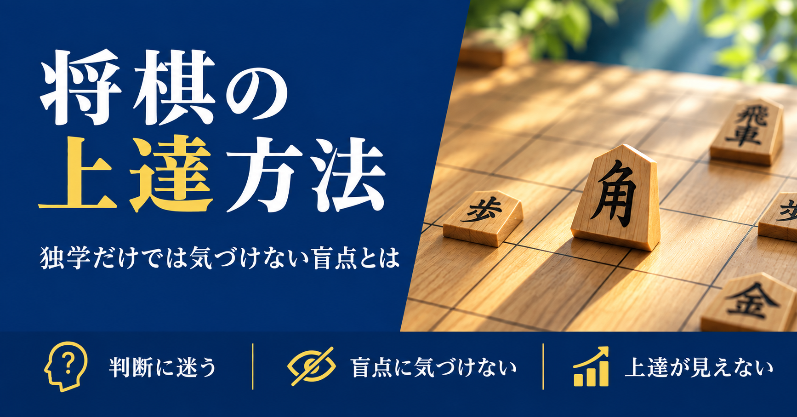

将棋の上達方法｜独学だけでは気づきにくい「盲点」とは

詰将棋も解いている、定跡書も読んでいる、YouTubeの解説動画も見ている。それなのに、思うように勝率が上がらない——そんな経験はありませんか。
将棋の上達方法としてよく挙げられるのは、詰将棋を解く、定跡を覚える、手筋をストックする、棋譜を振り返る、といった勉強法です。どれも大切な基本ですが、実はこうした基本を続けているだけでは超えにくい壁があります。それが「自分では気づけない盲点」の存在です。今回は、独学だけではなかなか超えにくい壁について、3つの視点からお話しします。
1. 勉強の方向性が正しいか、自分では確かめようがない
詰将棋、定跡、手筋、棋譜並べ——将棋の勉強法はたくさんあります。「今の自分に何が必要か」を自分なりに考えながら勉強を進めていくのは、とても良い姿勢です。
ただ、その判断が本当に合っているかどうかは、指してみて何十局も結果が出るまで、自分ではなかなか検証できません。もし方向性がズレていた場合、それに気づくまでの期間がそのまま遠回りになってしまいます。誰かに「その進め方で合っていますよ」「そこよりこっちを優先した方がいいですよ」と確認してもらえるだけで、遠回りをかなり減らすことができます。
2. 同じ負け方を繰り返していても、自分では気づきにくい
将棋の勉強で特に見落としがちなのが、「指し方の盲点」に自分では気づけないまま定着してしまうことです。
同じような場面で同じミスを繰り返していても、一人で指していると「なんとなく負けた」で終わってしまいがちです。第三者に棋譜を見てもらうことで初めて、「実はここに共通の原因があった」と気づけることは少なくありません。これは実力不足というより、視点がひとつしかないことによる、いわば必然の見落としです。
3. 上達を「見える化」できていないと続かない
勉強を続けていても、「強くなっている実感」が得られないと、モチベーションは徐々に下がっていきます。級位や段位はひとつの目安になりますが、それだけでは日々の細かい成長を感じにくいこともあります。
「先月と比べてここが良くなった」という具体的な変化を、誰かと一緒に確認できると、独学のモチベーションもぐっと続けやすくなります。
まとめ：独学を、一人で完結させなくていい
将棋の上達を妨げているのは、才能でも勉強量でもありません。自分の盲点は、自分では見えにくいということです。独学はこれからも大切にしつつ、時々は第三者の目を借りる。それだけで、上達のスピードは変わります。
ゆうちゃんのオンライン将棋教室では、棋譜添削を通じてあなたの盲点や課題を一緒に見つけ、今のあなたに本当に必要な勉強を一緒に整理していきます。「何から始めればいいかわからない」という段階からでも大歓迎です。まずは無料体験レッスンで、あなたの将棋を見せてください。
初心者から有段者まで、幅広く指導しています。気になる方は、まずは無料体験からお試しください。
無料体験を申し込む日々の詰将棋はXで発信しています。@tsume_shodan をフォロー →